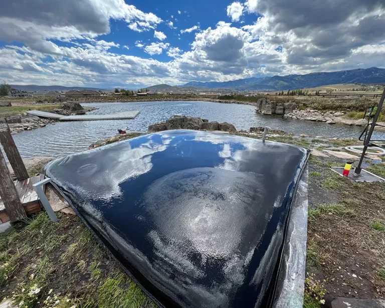

Understanding the Natural vs. Liner Pond Debate
Here at Utah Water Gardens, we have 11 years of experience building both natural and liner ponds throughout Utah. This choice affects everything from construction costs to long-term maintenance, and in Utah's challenging climate, the wrong choice can lead to expensive failures. As Utah natives, we understand this decision isn't as simple as many people think.
What Are Natural Ponds?
Natural ponds rely on the soil's natural ability to hold water:
- Clay soil ponds: Use natural clay to create watertight basins
- Compacted soil ponds: Mechanically compact soil to reduce permeability
- Bentonite clay ponds: Add bentonite clay to seal porous soils
- Natural spring ponds: Utilize existing water sources and natural basins
- Soil amendment ponds: Mix soil with sealing materials
- Gleying ponds: Use anaerobic decomposition to create natural seals
What Are Liner Ponds?
Liner ponds use artificial barriers to prevent water loss:
- EPDM rubber liners: Most common and durable option
- PVC liners: Less expensive but less durable
- HDPE liners: High-density polyethylene for large ponds
- Concrete ponds: Poured concrete with waterproofing
- Fiberglass ponds: Pre-formed fiberglass shells
- RPE liners: Reinforced polyethylene for enhanced durability
Key Differences in Construction
- Site preparation: Natural ponds require extensive soil analysis
- Material requirements: Liner ponds need specific materials
- Installation complexity: Liner ponds require precise installation
- Testing requirements: Natural ponds need water retention testing
- Timeline differences: Natural ponds may require longer curing
- Expertise needed: Different skill sets for each type
Natural Ponds: Pros and Cons for Utah
Natural ponds offer unique advantages and challenges in Utah's environment:
Advantages of Natural Ponds
Natural ponds offer several benefits that make them attractive in Utah:
- Lower initial cost: No expensive liner materials required
- Natural appearance: Blends seamlessly with landscape
- Self-healing: Clay can seal small leaks naturally
- Environmental benefits: No synthetic materials in ecosystem
- Long-term sustainability: Can last for decades with proper maintenance
- Natural filtration: Soil provides natural water filtration
Disadvantages of Natural Ponds
Natural ponds face significant challenges in Utah's climate:
- Soil dependency: Only works with specific soil types
- Water loss: Higher evaporation and seepage rates
- Climate sensitivity: Freeze-thaw cycles damage clay seals
- Maintenance intensive: Requires regular clay replenishment
- Unpredictable results: Success varies greatly by location
- Limited design options: Constrained by soil conditions
Utah-Specific Natural Pond Challenges
Utah's unique climate creates specific problems for natural ponds:
- High evaporation: Dry climate increases water loss
- Freeze-thaw damage: Winter cycles crack clay seals
- Soil variability: Different soil types across Utah
- Water scarcity: Limited water resources for refilling
- UV degradation: Intense sunlight breaks down natural seals
- Altitude effects: High elevation affects soil behavior
Natural Pond Success Factors
- Soil composition: Minimum 30% clay content required
- Compaction quality: Proper mechanical compaction essential
- Water source: Reliable water supply for maintenance
- Site selection: Proper drainage and slope considerations
- Maintenance commitment: Regular clay replenishment needed
- Professional expertise: Requires specialized knowledge
Liner Ponds: Pros and Cons for Utah
Liner ponds provide different advantages and considerations:
Advantages of Liner Ponds
Liner ponds offer reliable performance in Utah's challenging environment:
- Consistent performance: Works in any soil type
- Water efficiency: Minimal water loss through seepage
- Climate resistance: Handles freeze-thaw cycles better
- Predictable results: Known performance characteristics
- Design flexibility: Can create any shape or size
- Long-term reliability: Proven track record in Utah
Disadvantages of Liner Ponds
Liner ponds have their own set of challenges:
- Higher initial cost: Expensive liner materials
- Installation complexity: Requires careful installation
- Vulnerability to damage: Sharp objects can puncture liners
- UV degradation: Sunlight can break down some liners
- Environmental concerns: Synthetic materials in ecosystem
- Replacement costs: Periodic liner replacement required
Utah-Specific Liner Pond Considerations
Utah's climate affects liner pond performance:
- UV resistance needed: High altitude increases UV exposure
- Temperature extremes: Liners must handle 125°F temperature swings
- Rocky soil challenges: Sharp rocks can damage liners
- Wind exposure: Wind can cause liner movement and stress
- Drought considerations: Liners help conserve water
- Altitude effects: Reduced oxygen levels affect liner performance
Liner Material Selection
- EPDM rubber: Best choice for Utah's climate
- Thickness considerations: 45-mil minimum recommended
- UV protection: Carbon black content for UV resistance
- Temperature range: -40°F to 120°F tolerance
- Warranty coverage: 20+ year warranties available
- Installation requirements: Professional installation recommended
Utah Climate Impact on Pond Choice
Utah's unique climate significantly influences which pond type works best:
Temperature Extremes
Utah's temperature swings affect both pond types differently:
- Natural ponds: Freeze-thaw cycles crack clay seals
- Liner ponds: EPDM liners handle temperature extremes well
- Summer heat: Natural ponds lose more water to evaporation
- Winter cold: Both types need winterization
- Temperature stability: Liners provide more consistent performance
- Thermal expansion: Clay expands and contracts with temperature
Water Conservation
Utah's water scarcity makes efficiency crucial:
- Natural ponds: Higher water loss through seepage
- Liner ponds: Minimal water loss, better conservation
- Evaporation control: Both benefit from shade and wind protection
- Refill frequency: Natural ponds need more frequent topping off
- Water rights: Liner ponds use water more efficiently
- Drought resilience: Liner ponds better during water restrictions
Soil Conditions
Utah's varied soil types affect pond construction:
- Clay soils: Natural ponds work well in clay-rich areas
- Sandy soils: Natural ponds fail, liners required
- Rocky soils: Sharp rocks damage liners, need underlayment
- Mixed soils: Unpredictable results for natural ponds
- Soil testing: Essential for determining pond type
- Compaction requirements: Natural ponds need proper soil compaction
Altitude and UV Considerations
- High altitude effects: Increased UV radiation at elevation
- UV degradation: Natural seals break down faster
- Oxygen levels: Reduced oxygen affects pond health
- Temperature variations: More dramatic day/night swings
- Wind exposure: Higher winds increase evaporation
- Material selection: UV-resistant materials essential
Cost Comparison: Natural vs. Liner Ponds
Understanding the true costs helps make an informed decision:
Initial Construction Costs
Upfront costs vary significantly between pond types:
- Natural ponds: $2,000-8,000 for basic construction
- Liner ponds: $5,000-15,000 including liner materials
- Soil testing: $200-500 for natural pond feasibility
- Professional consultation: $500-1,500 for design and planning
- Excavation costs: Similar for both types Equipment rental: Natural ponds may need specialized equipment
Long-term Maintenance Costs
Ongoing costs differ significantly over time:
- Natural ponds: $500-2,000 annually for clay replenishment
- Liner ponds: $100-500 annually for basic maintenance
- Water costs: Natural ponds use 30-50% more water
- Repair costs: Natural ponds need more frequent repairs
- Liner replacement: $3,000-8,000 every 15-25 years
- Professional services: Natural ponds require more expert care
Total Cost of Ownership
Consider 20-year total costs for accurate comparison:
- Natural ponds: $12,000-48,000 over 20 years
- Liner ponds: $7,000-25,000 over 20 years
- Water savings: Liner ponds save $2,000-5,000 in water costs
- Maintenance time: Natural ponds require more labor
- Reliability factor: Liner ponds have fewer unexpected costs
- Property value: Liner ponds typically add more value
Hidden Costs and Considerations
- Water rights: Natural ponds may require additional water rights
- Permit differences: Different permit requirements and costs
- Insurance implications: Different coverage requirements
- Resale value: Impact on property value and marketability
- Time investment: Natural ponds require more owner time
- Expertise costs: Natural ponds need specialized knowledge
Performance Comparison in Utah
Real-world performance varies significantly in our climate:

Water Retention
Water loss rates differ dramatically between pond types:
- Natural ponds: 10-30% water loss monthly
- Liner ponds: 2-5% water loss monthly
- Evaporation: Similar for both types
- Seepage: Major difference between pond types
- Refill frequency: Natural ponds need weekly topping off
- Seasonal variations: Natural ponds more affected by weather
Water Quality
Water quality characteristics vary between pond types:
- Natural ponds: Natural minerals from soil
- Liner ponds: Cleaner water, easier to control
- pH stability: Liner ponds maintain more stable pH
- Nutrient levels: Natural ponds have higher nutrient content
- Algae control: Liner ponds easier to manage
- Fish health: Liner ponds provide better fish environment
Durability and Lifespan
Long-term performance varies significantly:
- Natural ponds: 5-15 years before major repairs
- Liner ponds: 15-25 years before liner replacement
- Climate impact: Natural ponds degrade faster in Utah
- Maintenance impact: Regular care extends both types
- Failure rates: Natural ponds have higher failure rates
- Repair complexity: Natural pond repairs more challenging
Ecosystem Health
- Plant growth: Natural ponds support different plant types
- Wildlife attraction: Both types attract beneficial wildlife
- Microbial activity: Natural ponds have more diverse bacteria
- Nutrient cycling: Natural ponds have natural nutrient processing
- Water clarity: Liner ponds typically have clearer water
- Seasonal changes: Natural ponds more affected by seasons
Expert Recommendations for Utah
Based on years of experience building ponds in Utah:
When to Choose Natural Ponds
Natural ponds work best in specific situations:
- Clay-rich soil: Soil testing shows high clay content
- Large properties: Space for natural pond expansion
- Water availability: Access to plentiful water sources
- Natural aesthetic: Desire for completely natural appearance
- Budget constraints: Limited initial construction budget
- Environmental focus: Priority on natural ecosystem
When to Choose Liner Ponds
Liner ponds are recommended for most Utah situations:
- Most Utah soils: Works in any soil type
- Water conservation: Important for drought-prone areas
- Reliability needed: Consistent performance required
- Fish keeping: Better water quality for fish
- Long-term investment: Planning for decades of use
- Urban settings: Better for smaller properties
Hybrid Approaches
Some situations benefit from combining both methods:
- Clay-enhanced liners: Use clay under liner for extra protection
- Natural edges: Liner pond with natural stone edging
- Partial natural areas: Liner pond with natural plant zones
- Bentonite addition: Add bentonite to improve natural ponds
- Layered approach: Multiple sealing methods for reliability
- Transition zones: Natural areas around liner ponds
Decision-Making Framework
- Soil analysis first: Always test soil before deciding
- Water availability: Assess water rights and availability
- Budget planning: Consider total cost of ownership
- Maintenance commitment: Evaluate time and effort available
- Long-term goals: Consider 10-20 year plans
- Professional consultation: Get expert advice for complex decisions
Construction Considerations
Different construction approaches for each pond type:
Natural Pond Construction
Building natural ponds requires specific techniques:
- Soil testing: Essential before construction begins
- Clay compaction: Proper compaction techniques critical
- Bentonite application: Add bentonite for better sealing
- Gradual filling: Fill slowly to allow clay to settle
- Monitoring period: Watch for leaks during first few months
- Professional expertise: Requires specialized knowledge
Liner Pond Construction
Liner installation requires careful attention to detail:
- Underlayment: Protect liner from sharp objects
- Proper sizing: Allow for liner overlap and anchoring
- Seam sealing: Professional seam installation critical
- Edge anchoring: Secure liner edges properly
- Quality materials: Use UV-resistant EPDM liners
- Installation timing: Install during optimal weather conditions
Site Preparation
Proper site preparation is crucial for both types:
- Excavation: Remove all sharp objects and roots
- Grading: Create proper slopes and drainage
- Soil stabilization: Prevent settling and movement
- Access planning: Ensure maintenance access
- Utility considerations: Plan for pumps and electrical
- Safety features: Include safety measures for both types
Quality Control Measures
- Testing protocols: Water retention testing for natural ponds
- Inspection requirements: Regular inspections during construction
- Material verification: Confirm quality of all materials
- Workmanship standards: Ensure proper installation techniques
- Documentation: Keep detailed records of construction
- Warranty considerations: Understand warranty coverage
Need Help Choosing Between Natural and Liner Ponds?
Get professional consultation to determine the best pond type for your Utah property and climate conditions.
Schedule a ConsultationConclusion
The choice between natural and liner ponds in Utah isn't a simple one, but it's a decision that will affect your water garden for decades. While natural ponds offer aesthetic appeal and lower initial costs, liner ponds provide the reliability and water efficiency that most Utah homeowners need.
Consider your specific situation carefully - your soil type, water availability, budget, and long-term goals all play important roles in this decision. Remember that Utah's challenging climate makes liner ponds the safer choice for most situations, but natural ponds can work well in the right conditions with proper planning and maintenance.
Don't make this decision based on cost alone. Consider the total cost of ownership, including water usage, maintenance, and potential repairs. The investment in the right pond type will pay dividends in enjoyment, reliability, and long-term value for your Utah water garden.
Ready to make your pond decision? Start by having your soil tested and consulting with experienced professionals who understand Utah's unique climate challenges. Your choice will determine whether your pond becomes a source of joy or frustration for years to come.